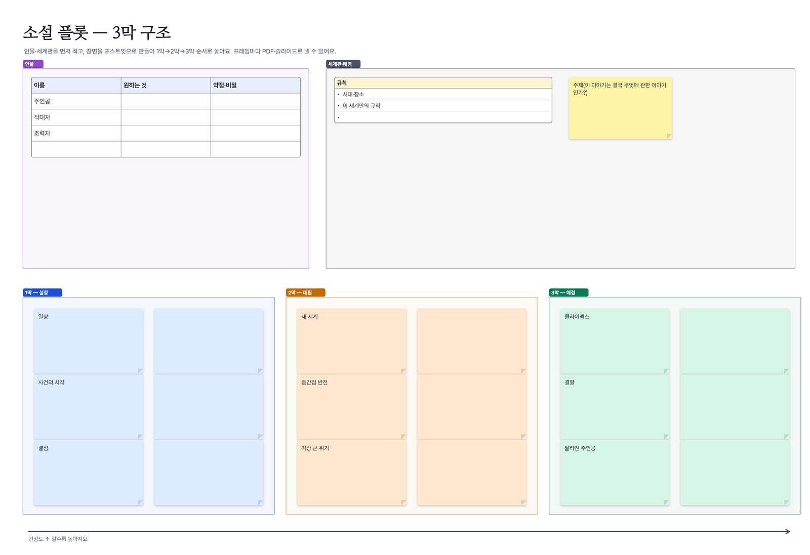

이런 분께: 웹소설·웹툰 작가, 시나리오 작가, 세계관을 함께 만드는 팀
Walkie로 할 수 있는 것
- 인물표(이름·원하는 것·약점·비밀)와 세계관 규칙 목록이 미리 놓여 있어요
- 장면을 포스트잇으로 만들어 1막 → 2막 → 3막 칸으로 끌어 옮겨요
- 인물 카드끼리 관계선을 붙이면 카드를 옮겨도 선이 따라와요 · 선 위에 관계 설명
- 마인드맵으로 떡밥·복선 정리, 프레임마다 PDF·슬라이드로 내보내기
- 원고와 설정은 서버에 저장되지 않고 멤버 기기끼리만 암호화해 주고받아요


템플릿으로 바로 시작
- Walkie를 설치해요(Windows 10·11, 안드로이드). 혼자 쓰는 "이 기기 보드"는 로그인 없이 바로 열려요.
- 아래 템플릿 파일(.walkie)을 받아 두 번 누르면 Walkie에서 새 보드 한 장으로 열려요. 앱 안 도구 묶음의 "템플릿"에도 같은 템플릿이 있어요.
- 함께 쓰려면 그룹을 만들고 초대 링크를 보내요. 통화를 켜고 같은 보드를 동시에 고쳐요.
자주 묻는 질문
소설 플롯 보드는 무료인가요?
네. 2026년 12월 31일까지 모든 기능이 무료이고, 이후 요금은 최소 30일 전에 알려 드려요. 템플릿은 앱 안에도 들어 있어요.
원고 내용이 서버에 올라가나요?
아니요. 보드와 대화는 서버에 저장하지 않고, 초대한 멤버의 기기끼리 암호화해서 주고받아요.
혼자서도 쓸 수 있나요?
네. "이 기기 보드"는 로그인 없이 혼자 쓰는 보드예요. 함께 쓰려면 그룹을 만들어 링크로 초대해요.